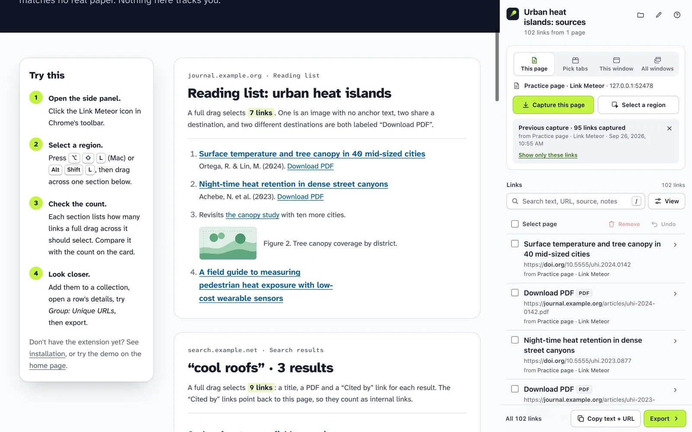

Development build · Not yet in the Chrome Web Store
Install Link Meteor
Until Link Meteor is published in the Chrome Web Store, you can load the development build into desktop Chrome yourself. It takes about two minutes and needs no account.
Before you start
Link Meteor is built for desktop Google Chrome. It doesn't run on phones or tablets, and there are no Firefox or Safari versions.
What has been tested so far. Version 0.3.0 passed automated checks in Chrome for Testing on macOS, using synthetic pages. They cover capture, exports, bookmarks, backup and restore, site access and permission removal, including Chrome's own permission prompts, which the project owner answered by hand. The project owner then used 0.3.0 in everyday Google Chrome on macOS, going through every new feature, and everything worked. They also tested it in Brave and Microsoft Edge. The checks that need no extra permissions also passed in Chrome 116, the oldest version Link Meteor supports. Windows, Linux and screen readers haven't been tested yet. If something doesn't work for you, please report it.
A development build is installed with Chrome's Developer mode. That's a normal Chrome setting for loading extensions from a folder on your computer; it doesn't change anything else about your browser.
Works in
- Google Chrome
- Tested on macOS. Link Meteor needs Chrome 116 or newer, and that oldest version passed the automated checks that need no extra permissions.
- Brave and Microsoft Edge
- Tested by hand on macOS. Load the ZIP the same way, from the browser's own extensions page with Developer mode on.
- Firefox and Safari
- Not supported.
Windows and Linux haven't been tested yet. If you try Link Meteor there, or in another Chromium-based browser, a report of what worked helps.
Watch the steps
A 74-second walkthrough of this page: download, load the folder, pin the icon, capture a section of the practice page and export it. Steps that happen in your own file manager, Chrome's file picker or the toolbar are shown as labeled illustrations. It was recorded with version 0.2.2; the steps are the same for the current version.
Read the transcript
- 0:00
Picture The Link Meteor artwork with the title “Set up Link Meteor in desktop Chrome.”
- 0:03
Picture The Link Meteor install page scrolls to the download card, and the Download link-meteor-0.2.2.zip button is clicked.
- 0:03
Step 1: Download the ZIP from the install page.
- 0:07
Picture Illustration: the ZIP file becomes a folder named link-meteor-0.2.2 containing background.js, content, core, icons, manifest.json and ui.
- 0:08
Step 2: Unzip it into a folder you’ll keep. Chrome loads Link Meteor from there.
- 0:12
Picture The Chrome Extensions page: the Developer mode switch is turned on, revealing Load unpacked, which the pointer moves to.
- 0:12
Step 3: Open chrome://extensions and turn on Developer mode.
- 0:15
Step 3: Then choose Load unpacked.
- 0:18
Picture Illustration: in the file picker, the link-meteor-0.2.2 folder is selected; it contains manifest.json.
- 0:18
Select the unzipped folder, the one that contains manifest.json.
- 0:22
Picture The Extensions page shows the Link Meteor 0.2.2 card.
- 0:23
Link Meteor 0.2.2 now appears in your extensions.
- 0:26
Picture Illustration: the Extensions puzzle-piece menu is opened and Link Meteor is pinned, so its icon appears in the toolbar.
- 0:27
Step 4: Pin it from the puzzle-piece menu so the icon stays in view.
- 0:30
Picture On the practice page, the search results section is selected. The card reads “9 links selected.” Copy text + URL reports “Copied anchor text and URL as two spreadsheet columns,” then Add to collection saves them.
- 0:31
Step 5: On the practice page, press the shortcut…
- 0:34
Step 5: …and drag across one section.
- 0:38
Compare the count with the section’s answer key: 9 links.
- 0:41
Copy text + URL puts two columns on your clipboard.
- 0:44
Or add them to a collection to review later.
- 0:46
Picture The Link Meteor side panel lists the captured links beside the practice page. Export opens the export view, where CSV is chosen and downloaded.
- 0:46
Step 6: Click the Link Meteor icon to open its side panel beside the page.
- 0:50
Step 6: Export shows exactly which links it will use.
- 0:54
Step 6: Pick a format and download. Here, CSV.
- 0:57
Picture The Chrome keyboard shortcuts page shows Link Meteor’s “Select a region of links” shortcut.
- 0:57
If the shortcut doesn’t work, change it at chrome://extensions/shortcuts.
- 1:01
Picture In the side panel, the help button opens About and help, with the version, “made by Ryan Kamp,” and links to the guide, bug reports and suggestions, the website, source code and optional sponsorship.
- 1:01
Help, bug reports and suggestions are under About and help.
- 1:06
Reports are public, so leave out private URLs and data.
- 1:09
Picture Closing card with the promises, the website address and “Made by Ryan Kamp.”
Download
Link Meteor 0.3.0, development build · 360 KB ZIP
Download link-meteor-0.3.0.zipSHA-256 25463687d2f0a7b9e280de7d4f905753cb9b8cc57b359129937f8ea5e98302c7
To check the file, compare its SHA-256 with the value above. On a Mac, run shasum -a 256 followed by the file's path in Terminal; on Windows, run certutil -hashfile with the path and SHA256 in Command Prompt.
Or build it from source
The source is on GitHub. With Node.js 22 or newer, run npm run build in the project folder; there are no packages to install. Then load the dist folder in the next step.
Load it into Chrome
- Unzip the download into a folder you'll keep. Chrome loads the extension from that folder every time it starts, so don't delete or move it afterward.
- Open
chrome://extensions. Type it into the address bar and press Enter. - Turn on Developer mode. The switch is at the top right of the Extensions page.
- Choose Load unpacked and select the unzipped folder, the one that contains
manifest.json. It holdsbackground.jsandmanifest.json, and the foldersbackground,content,core,iconsandui. - Pin it. Open the puzzle-piece menu in Chrome's toolbar and pin Link Meteor so its icon stays visible.
Chrome may occasionally remind you that developer-mode extensions are turned on. That reminder is expected for any extension loaded this way.
First capture
- Open the practice page, a page of synthetic links made for trying Link Meteor.
- Click the Link Meteor icon to open its side panel beside the page.
- Press ⌥ ⇧ L on a Mac, or Alt Shift L on Windows and Linux, then drag across the reading list. Choose Add to collection and watch the links arrive in the panel.

The first time you open the side panel, a welcome card offers Allow on all sites (recommended), so you can hold a key and drag on any site, or Choose sites later. Chrome asks once if you allow all sites. Otherwise, it asks for extra permission only when you use a feature that needs it, such as capturing several tabs at once. The privacy page lists every permission and why it's asked for.
Keyboard shortcut
The default shortcut for selecting a region is ⌥ ⇧ L on a Mac and Alt Shift L elsewhere. If another extension already uses it, Chrome leaves Link Meteor's shortcut unassigned, and the side panel says Not set.
To change it, open chrome://extensions/shortcuts, or choose Change next to the shortcut in Link Meteor's side panel. You can always use the Select a region button or Chrome's right-click menu instead.
Update or remove
Update
Download the new build and replace the contents of your Link Meteor folder with it, keeping the same folder. Then open chrome://extensions, press the reload button on Link Meteor's card, and reload any pages you had open. Your collections are kept. From version 0.3.0 on, you can also download a backup first.
Remove
Choose Remove on Link Meteor's card in chrome://extensions. This deletes your saved collections, because they are stored only in this browser. Download a backup or export anything you want to keep first.
Troubleshooting
- Nothing happens on a page
- Chrome doesn't let extensions run on its own pages (like
chrome://addresses), the Chrome Web Store or incognito windows. On ordinary pages that were already open when you installed or updated, reload the page once. - The shortcut doesn't respond
- Check
chrome://extensions/shortcuts. Another extension or your operating system may be using the same keys. - Some links weren't captured
- Links inside frames from other sites and closed shadow roots can't be read, and content that hasn't loaded yet isn't there. The capture report says when frames were skipped. See limits and coverage.
- Capture this page says Link Meteor doesn't have access
- Chrome gives Link Meteor access to a page when you click its toolbar icon there, and that access ends when the tab moves to another site. If you allowed all sites, this doesn't come up. Otherwise, Link Meteor asks Chrome for the new site in the same click; if you decline, the capture reports that access was denied. When Chrome hides the page's address, Link Meteor offers Allow on all sites instead. You can also click the Link Meteor icon again while you're on the page (it may be under the puzzle-piece menu), then choose Capture this page.
- Hold-key drag doesn't start on a site
- Check that the site isn't under Never on these sites in Link Meteor's Site access settings. If Chrome's own site access for Link Meteor (in the puzzle-piece menu) is set to On click, hold-key drag can't run, and Link Meteor explains why. Typing in a text box, search field or editor never starts a selection.
- A multi-tab capture says Access denied
- Chrome asked whether Link Meteor could read those sites, and the request was declined or the permission was later removed. Capture again to be asked again.